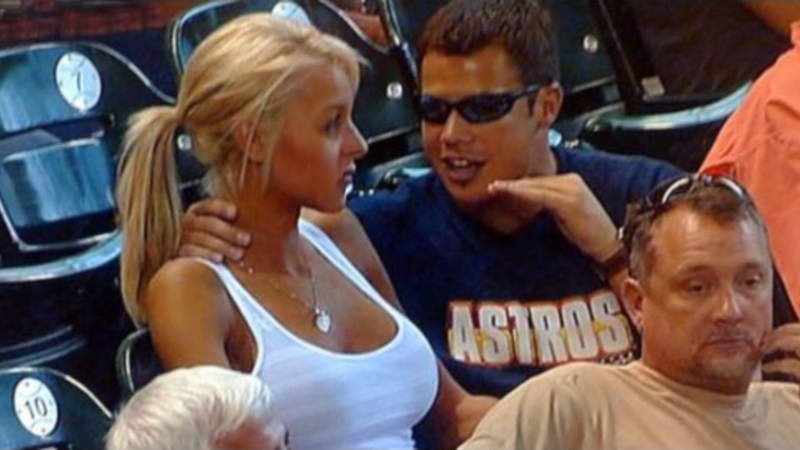
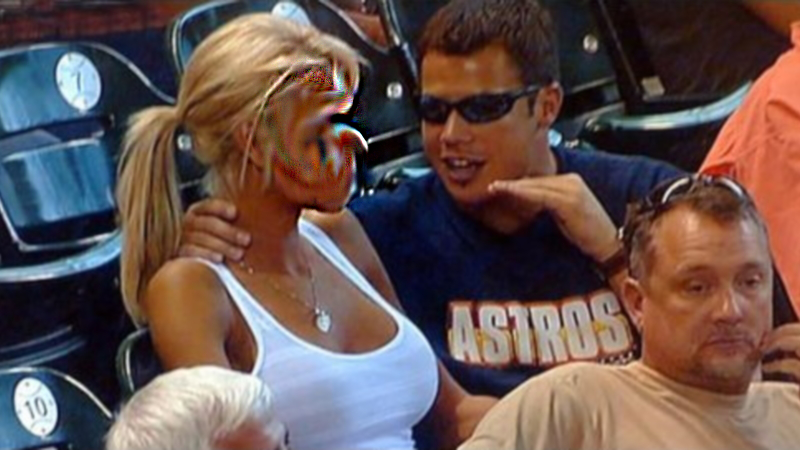
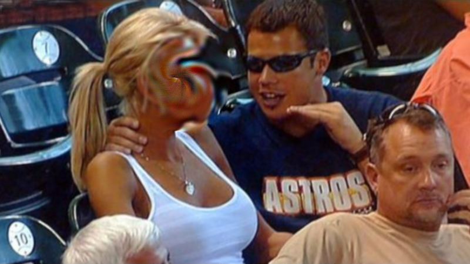
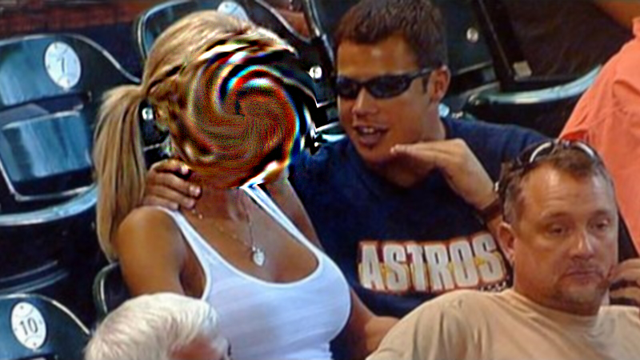
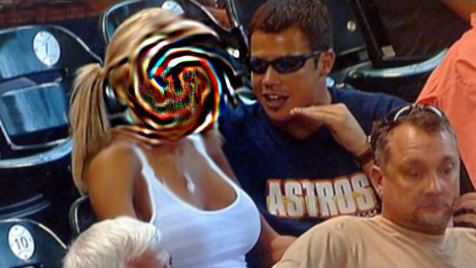
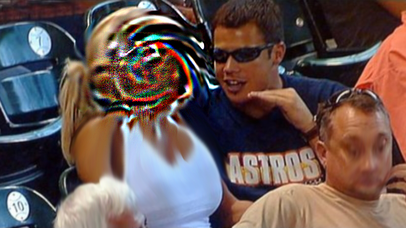
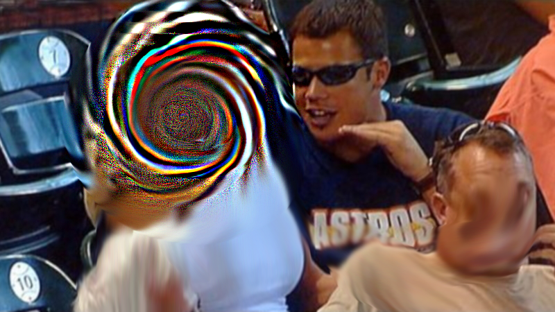
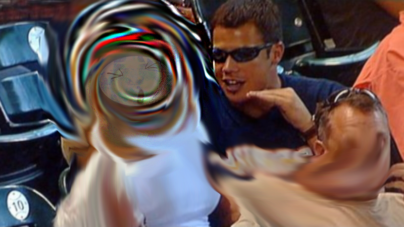
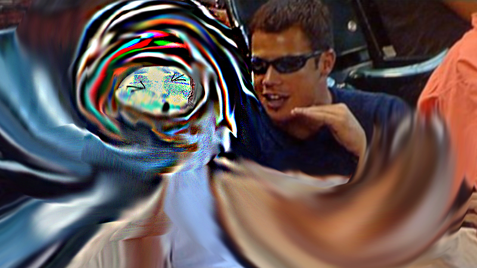

So there's this thing Milady and like it's a PFP NFT. Which is like a picture you can spend money on and then use on twitter to become your personality. But like you don't need to buy it but people still do, and like it was the only cool one and it was made by an art collective called Remillia.
Remillia started with a nft 1/1 art show called I Long For Network Spirituality at a vintage clothing store in New Zealand and they had this live chat website where people hung out for a little while. It was cool and they platformed some
obscure internet artists who made money from there art for the first time ever. And then they made Milady which was 10000 nfts and they sold some and people started posting with them on Twitter and they had this rambunctious yet innocent schizo energy and people were like
damn thats crazy and it's all after the vibe shift which was this moment where everyone online because of the pandemic synched up real quick and there were these other posters angelicism01 Worm and Soph . And worm worked on Milady and so did Soph and this person Sprite

made the most important contribution the underlying drawings and it was all based on his profile picture . And angelicism didn't like NFT because he is an environmentalist or something and after that summer some of the energy faded a bit and moved towards Milady but they
didn't mint out which means they didn't sell out which is really bad for a nft project so there main leader Charlotte Fang started rounding up other interesting artistic nft projects. There was Spiky DJ, there was Ad World, and Super Metal Mons and Tojiba, and they
created the Avant NFT Wave and the early next year they did mint out even though crypto and alts were going giga bear mode and it was crazy and euphoric and everything was sick but not long after that the main head of Remillia Charlotte was exposed as previously being a
poster called Miya/Sonya and there vibes were bad and they were accused of grooming young girls and telling them to be skinny and some other gay shit and they were also nazis or something but it was also revealed that Miya/Charlotte is like a rich indian kid named Rohit
whose mom knows Hillary Clinton, and he like left the internet after pretending not to be miya he admitted he was and the angelicism got on his side because he also got doxxed as a gen x British dude with the cringiest name ever so they had something in common. And in his
absence the Avant NFT projects turned on Remillia or stayed silent or tried to stay supportive because it was their source of money and personality, and in general a nice little movement got broken apart but it only got worse. But the nft influencers like some Lama loser
and Ratwell and Path turned on cfang and that was really the most detrimental part because they were the only reason people bought in the first place. Charlotte came back in blazing glory and began to out post the allegations with a thorough influence campaign which
worked really well and they became an embodiment of there detractors criticism and joke about being a nazi pedo cult. And there simultaneously was a different kind of phenomena happening were people would make derivatives of Milady wich is like a collection which kinda
looks similar and piggybacks on the community and is cheaper and is a grift or for fun. And there was a derivative called Mifella that came out around this time ish, but it was on a cucked chain called Solana that completely blew up because of SBF and FTX collapse which
is another story. And the leaks that caused the cancel were from a groupchat called Hotpot and they were probably leaked by various people but got blamed on Worm and Soph and worm is old and soph is young so worm groomed soph and then soph filed a lawsuit against milady
which was retarded and worm defected to a different nft collective called Yempeji Yeche Lang which is run by artist Jared Madere who has shown at the Whitney and has some art world clout and Worm opped cause he makes gay little paintings or something. And then Spiky
posted something like "talking to little girls online is not art" and that like canceled Spiky via Charlie cause he's a sensitive pussy, and then they traced wallets from Mifella to Spiky (supposedly) to realize it was the same person and spiky was a fully doxxed art
collective too but Mifella seemed like some rouge member posting aggressively and with extreme and constant mental illness. And it gained the attention of milady because it was so annoying and yeah Mifella was like Milady but a boy but then Remillia made there own Boy
Milady but the art was somehow really shitty and bad, and it didn't mint out and was really cucked and it minted on a weird site called Scatter which gets more important later but then all of a sudden after being an open mint for some time it mysteriously minted out super
fast. And the Milady basically abandoned it's white hearted promise and regressed into some of the body builder era posting which inspired it's main copy writer and shill Jon Lemarie who is also Yayo and might be an old poster 3d testosterone who did this like hyper masc

posting which also like means the person posting is a loser manlet irl but that's how Twitter users are so . Remillios are all over the place and they basically copied Mifella but there was more stupid and a disgrace to sprites art and the art factor which was keeping
Remillia cool. And Mifella started to kinda freak and get more and more deranged and post harder and harder and like a lot of time passed here because the market was really shit but the cheap nature of Remillios and Scatter as an easy way for retards to launch nfts

despite it already being really easy made more people make derivatives of Milady and there were some before but now there was a lot and this is around when Charlie started to get cucked specifically when an AI generated derivative called Schizoposters came out, since
Chuck is an opportunistic cuck he has to shill it since it it was doing well on the network but it really started to dilute the good vibes of the original shit and also there was this poster named Lizzy who disappeared at some point and she really formed the triad between

Angelicism and Remillia and was independently groomed in the school of them both but transcended there abilities but they would later return after cucking a separate online community of manlet nerds who still were sperging over 21e8 a Bitcoin numbers are magic meme from a
few years ago. But anyways those shills plus some decent derivs like pixelady and the new access provided by scatter created a massive new wave of derivatives to begin to emerge. This also follows a steady climb in price into the winter which eventually totally went

insane with an Elon musk tweet, and also the launch of bonkler which has a auction style sale where the price is like 70% reserved in the nft so the prices always seem way higher than they actually are, and also there was a blur airdrop that let Remillia pump floor, and
also pepe a shitcoin named after the meme was adopted by Miladies early and went crazy and spawned a new shitcoin season and also rotated into floor pumping and Remilia was giga pumping and seemingly going to be the best and everyone was euphoric and somewhere in this

Mifella who o yeah I forgot posted this really good letter like that winter that the Remillia people had to address cause it made Charlie look like such a cuck and i also forgot this but Yayo was doing really well and that was on Canto which is a shit chain and that one
truly had the worst art of all of them and really show you your dealing with people who's life experiences involve living around there parents house and looking at social media apps all day and watching some of there dad's favorite movies. There price pumped but it was

mostly used as an exit for canto bagholders who couldn't bridge back to eth and Yayo bridged and then fp collapsed into irellivance. And Milady FP went to like 7 because Elon accidentally retweeted a meme with a Milady in it and people love using him as a signal to lose a
lot of money. Yeah 7 eth is like 12 thousand dollars at the time I think. Right I kno I know. So Mif went crazy kinda around here and killed himself, he died so he could live, and Biscuit took the essence of Mif and made his own derivative of Mifella called Drifella and
people bought it into the pump because they didn't know it was a op nft and the art was sick and Drifella was Mifellas essence injected into the pokemon Dratini. But the the cuckverse started to form. And milady's cucked beginnings started to get more and more apparent

and the derivative spam increased exponentially and Milady's were getting scammed and having there ecosystems liquidity drained by outsiders so the cuck energy was increasing exponentially too and the cuckverse started to form in the shape of 3 new NFTs bringing the total
quantity of Fellaverse projects up to 5. They all launched in quick succession but first was, The Constant Fella, 1983-2023 Erratic Behavior Guys Under Zero Authority Supervision (feat. MiFella JoFella and DriFella) $TCF19832023EBGUZASFMJD. And then Chair (Death of

Mifella) 5th Official Cuckcore NFT $CHAIR. And then CuckFella $CUCK. And they were all cool and they had fire art and it started to create a second path and some people were on it but mostly it caused Milady's to cope and seeth and o yeah so there was this thing HOTPOT
where Remillia tried to groom egirls and so of course maybe there became this other thing but it's unsure called CUCKPOT which was like early HOTPOT vibes but without any ugly dudes pretending to be Chinese Girls and then Chuck and Sprite attended Praxis week and

Angelicism movie came out and it sucked and cucked Remillia by cutting them out so they became enemies and photos of Chuck and Sprite leaked and it sent the Fellaverse ablaze and the posting continued and now that's like where we're at now but like ever week something new
happens so you like never know u know.
